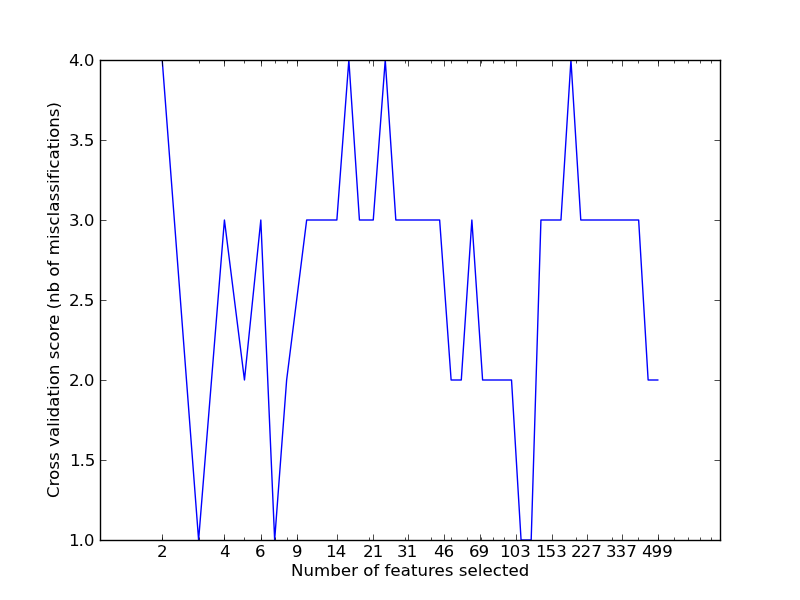

Recursive feature elimination with cross-validation¶
Recursive feature elimination with automatic tuning of the number of features selected with cross-validation

Python source code: plot_rfe_with_cross_validation.py
print __doc__
import numpy as np
from scikits.learn.svm import SVC
from scikits.learn.cross_val import StratifiedKFold
from scikits.learn.feature_selection import RFECV
from scikits.learn.datasets import samples_generator
from scikits.learn.metrics import zero_one
################################################################################
# Loading a dataset
X, y = samples_generator.test_dataset_classif(n_features=500, k=5, seed=0)
################################################################################
# Create the RFE object and compute a cross-validated score
svc = SVC(kernel='linear')
rfecv = RFECV(estimator=svc, n_features=2, percentage=0.1, loss_func=zero_one)
rfecv.fit(X, y, cv=StratifiedKFold(y, 2))
print 'Optimal number of features : %d' % rfecv.support_.sum()
import pylab as pl
pl.figure()
pl.semilogx(rfecv.n_features_, rfecv.cv_scores_)
pl.xlabel('Number of features selected')
pl.ylabel('Cross validation score (nb of misclassifications)')
# 15 ticks regularly-space in log
x_ticks = np.unique(np.logspace(np.log10(2),
np.log10(rfecv.n_features_.max()),
15,
).astype(np.int))
pl.xticks(x_ticks, x_ticks)
pl.show()